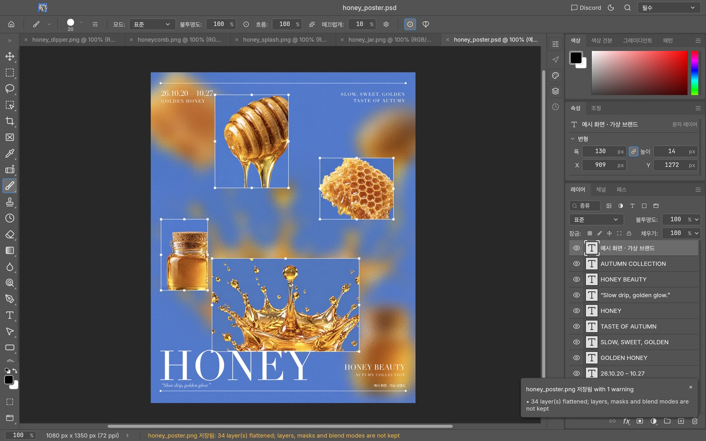
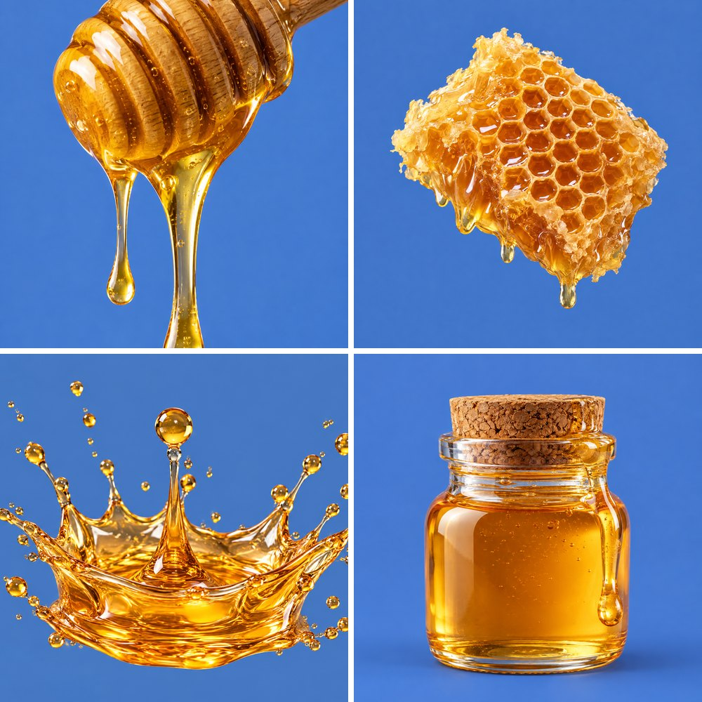
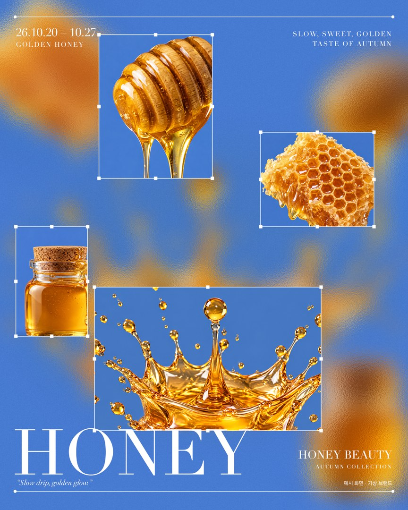

포토샵 구독 중인 마케터,
무료로 바꾸는 법
PhotoCraft는 포토샵의 메뉴·단축키·PSD를 그대로 쓰도록 처음부터 다시 만든 무료 오픈소스 앱이에요. 간단한 배너·썸네일이라면 구독 없이 해 볼 만해요. 영상 속 포스터도 이 앱으로 만들었어요. 사진은 Codex가 생성하고, 편집은 Claude가 했어요.
01PhotoCraft가 뭔가요
만든 곳은 ArtCraft(storytold)예요. 포토샵의 동작과 겉모습만 관찰하고, 공개된 스펙으로 처음부터 새로 짰어요. 포토샵 코드는 쓰지 않았어요(클린룸 방식). 요즘 깃허브에서 뜨는 REA(앱을 뜯어보는 리버스 엔지니어링 도구, ★ 29만)처럼 '뜯어보고 다시 만드는' 흐름이에요. 단, PhotoCraft를 REA로 만들었다는 근거는 없어요.

02설치하기
- 맥깃허브 storytold/photocraft → Releases에서 최신 버전의
photocraft-버전-macos-universal.dmg를 받아요(약 90MB, 애플 실리콘·인텔 둘 다). 열어서 PhotoCraft를 응용 프로그램 폴더로 끌어 놓으면 끝. 애플 공증을 받은 앱이라 경고 없이 열려요. - 윈도우같은 Releases에서
windows-x64.msi를 받아 설치해요. - 여러 앱을 한 번에ArtCraft Launcher를 깔면 PhotoCraft와 형제 앱(PDF·영상·벡터 등)을 한 곳에서 설치·업데이트할 수 있어요.
- 공식 출처는 깃허브
storytold계정과 getartcraft.com뿐이에요. 다른 사이트에서 받은 파일은 열지 마세요.
03마케터가 바로 쓸 만한 것
디자이너가 준 PSD를 레이어 그대로 열고, 문구만 바꿔서 다시 저장할 수 있어요. 직접 34개 레이어 PSD를 저장해 봤는데 경고 없이 저장됐어요.
컴퓨터에 깔린 폰트를 그대로 써요. 맥이면 기본 한글 폰트(Apple SD Gothic Neo)로 바로 한글 배너를 만들 수 있어요.
그림자·테두리 같은 레이어 스타일, 가우시안 흐림, 유리(간유리) 필터까지 있어요. 영상 속 포스터의 흐린 유리 바탕이 이 필터예요.
PNG · JPG · WebP 등으로 내보내요.
04Codex가 생성하고 Claude가 편집하기
영상 속 포스터는 사람이 마우스로 만든 게 아니에요. ① Codex CLI(ChatGPT 계정 로그인)로 같은 배경의 꿀 사진 4장을 만들고, ② Claude Code가 PhotoCraft를 자동화 기능(제어 채널)으로 켜서 흐림 + 간유리 + 크롭 박스 + 세리프 제목으로 합성했어요. 레이어 34개짜리 PSD로 저장돼요.


포스터가 만들어지는 과정(빠르게 돌린 화면)이에요.
codex exec로 [주제] 사진 [N]장을 생성해서 src/ 폴더에 저장해 줘. - 모든 사진은 같은 단색 배경(#색코드), 글자·로고·워터마크 없이. 그다음 PhotoCraft를 제어 채널로 켜서 [레퍼런스 설명] 느낌의 1080×1350 포스터를 합성해 줘. - 사진은 크게 흐린 바탕 + 선명한 크롭 박스로 - 제목: [큰 제목] / 문구: [혜택] / 기간: [기간] - 레이어는 그대로 PSD로 저장하고, PNG도 같이 저장해 줘. - 내가 작업 중인 화면은 가리지 말아 줘(포커스 가져가지 않기).
💡 처음 한 번은 결과를 보고 "흐림을 줄여 줘", "제목이 겹쳐" 처럼 고쳐 달라고 하세요. 저도 두 번 고쳐서 영상 속 포스터가 됐어요.
PhotoCraft를 제어 채널로 켜서 1080×1350 인스타 배너를 만들어 줘. - 브랜드: [브랜드명], 메인 색: [#색코드] - 문구: [큰 제목] / [혜택] / [기간] - 레이어는 그대로 PSD로 저장하고, PNG도 같이 저장해 줘.
05써 보기 전에 꼭
- 아직 0.9 버전이에요. 글자를 만들 때 굵기가 바로 안 먹는 경우가 있었어요(굵기를 한 번 더 지정하면 돼요). 중요한 작업 파일은 원본을 따로 보관하고 테스트하세요.
- 포토샵의 모든 기능이 다 있는 건 아니에요. 생성형 채우기 같은 AI 기능은 비교하지 않았어요.
- 회사 컴퓨터라면 설치 전에 IT 담당자·보안 기준을 먼저 확인하세요.
- AI로 만든 이미지는 광고에 쓰기 전에 매체별 AI 표기 기준을 확인하세요.
06다음 편 예고
같은 '뜯어보기' 도구 REA로 노션의 단축키 검색창이 어떻게 만들어졌는지 보고, 같은 구조로 마케터용 맞춤 툴(프롬프트·UTM 런처)을 직접 만든 이야기예요.
대행사에서 AI 교육하는 현직 마케터가 직접 써 보고 정리해요.
인스타에서 팔로우